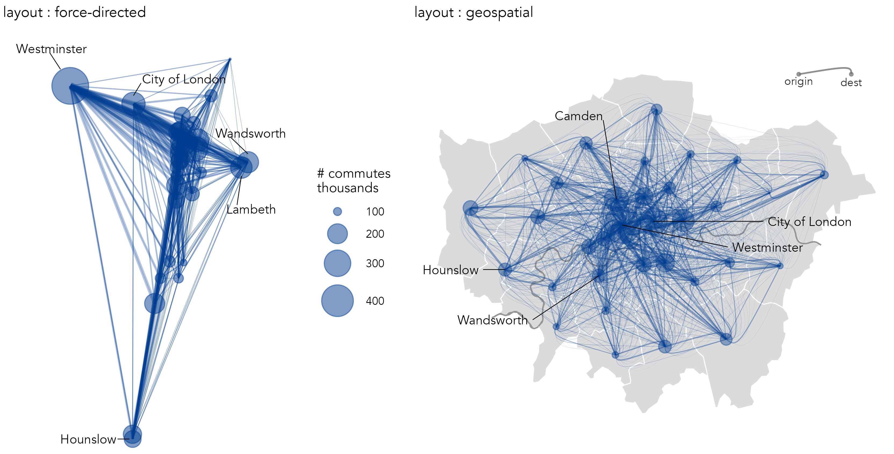
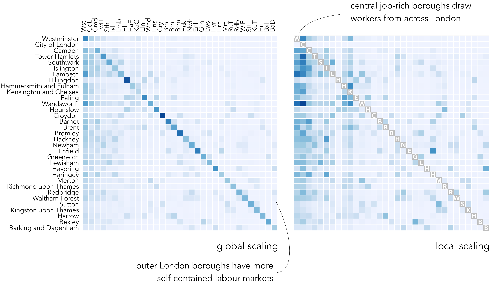
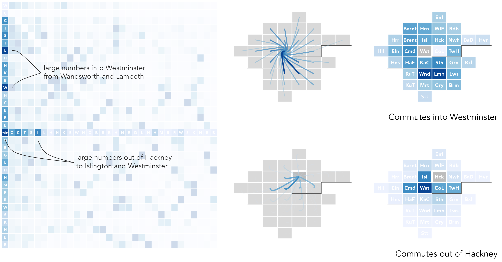
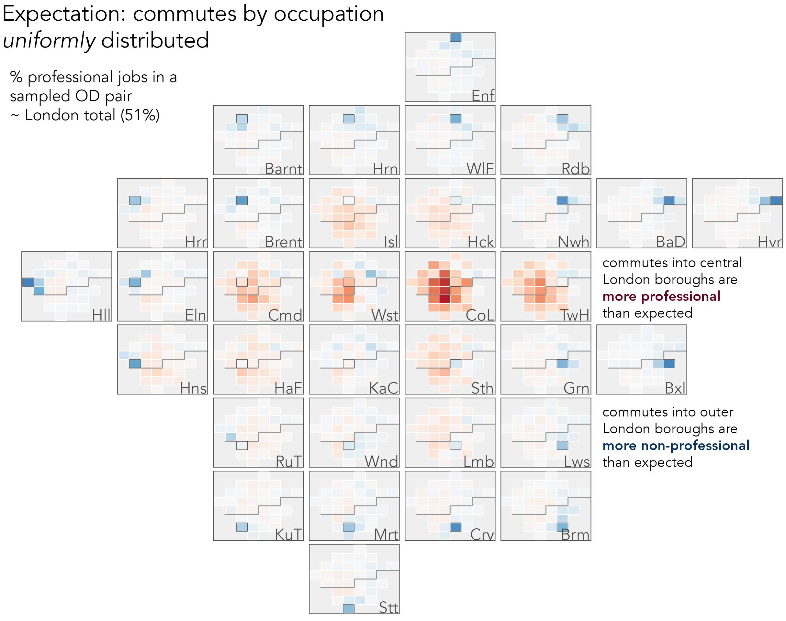
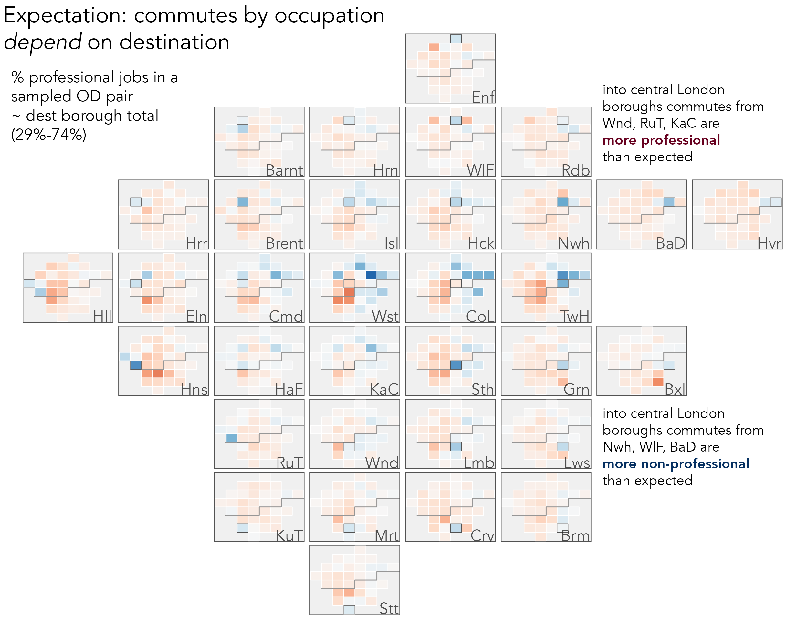

5 Networks
By the end of this chapter you should gain the following knowledge and practical skills.
Knowledge
- Understand the special structure and vocabulary used to represent network data.
- Appreciate the strengths, weaknesses and trade-offs of network visualizations and of incorporating geographic context.
Practical skills
-
Write
ggplot2specifications to analyse spatial network origin-destination data.
5.1 Introduction
Networks are a special class of data used to represent things, entities, and how they relate to one another. Network data consist of two types of element: nodes, the entities themselves, and edges, the connections between nodes. Both nodes and edges can have additional information attached to them – counts, categories and directions. Network data are cumbersome to work with in R as they are not represented well by flat data frames. A common workflow is to split the data across two tables – one representing nodes and one representing edges (Wickham, Navarro, and Lin Pedersen 2020).
A category of network data used heavily in geospatial analysis is origin-destination (OD) data describing, for example, flows of bikes (Beecham et al. 2023) and commuters (Beecham and Slingsby 2019) around a city. These data consist of nodes, origin and destination locations, and edges, flows between those origins and destinations. Whilst statistics from Network Science can and have (Yang et al. 2022) been deployed in the analysis of geospatial OD data, visualization techniques provide much assistance in exposing the types of complex structural patterns and relations that result from locating OD flows within geographic context.
In this chapter we will work with an accessible and widely used OD network dataset: Census travel-to-work data recording counts of individuals commuting between Census geographies of the UK based on their home and workplace. Specifically, we will work with data in London recording travel-to-work between the city’s 33 boroughs.
5.2 Concepts
5.2.1 Node summary
The nodes in this dataset are London’s 33 boroughs and the edges are directed OD pairs between these boroughs. In Figure 5.1 frequencies of the number of jobs available in each borough and workers living in each borough (the nodes) are represented. Note that job-rich boroughs in central London – Westminster, City of London, Camden, Tower Hamlets – contain many more jobs than workers residing in them. We can infer that there is a high level of in-commuting to those boroughs and the reverse, a high level of out-commuting, for worker-rich boroughs containing large numbers of workers relative to jobs.
5.2.2 Node-link representations
The most common class of network visualization used to represent network data are node-link diagrams. These depict graphs in two dimensions as a force-directed layout. Nodes are positioned such that those sharing greater connection – edges with greater frequencies – are closer than those that are less well-connected – that do not share edges with such large frequencies. Edges are drawn as lines connecting nodes, and so node-link diagrams.
The left graphic in Figure 5.2 uses a force-directed layout to represent the travel-to-work data. Nodes, London boroughs, are sized according to the number of jobs and workers they contain and edges, commutes between boroughs, are represented as lines sized by commute frequency. As is often the case with node-link diagrams, the graphic looks complex. Job-rich boroughs, Westminster and City of London, are labelled and have many connecting lines – most likely workers commuting-in from other London boroughs. Other more ‘residential’ boroughs are labelled. Lambeth and Wandsworth, for example, contain many connecting lines – likely residents commuting-out to other London boroughs for work. That these boroughs are close in geographic space as well as force-directed space suggests that, as expected, between-borough commuting is spatially dependent.
To investigate this more directly it makes sense to position nodes with a geographic arrangement. In the right column of Figure 5.2, nodes (boroughs) are placed in their exact geographic position (geometric centroid of boroughs) and line width and colour is used to encode edge frequency. Nodes are again represented with circles sized according to frequency (the total number of jobs and workers contained in the borough) and flow direction is encoded by making flow lines asymmetric, following Wood, Slingsby, and Dykes (2011): the straight ends are origins, the curved ends destinations.

The geographic positioning of nodes adds context and the encoding of direction provides further detail. For example, the pattern of commuting into central London boroughs versus more peripheral boroughs, with asymmetric flows into Westminster just about detectable and a more symmetric pattern between outer London boroughs. However, there are problems that affect the usefulness of the graphic. Self-contained flows – those that describe individuals living and working in the same borough – are not shown. The graphic is cluttered with a ‘hairball’ effect due to multiple overlapping lines. Longer flows appear more visually dominant than do shorter flows, an unhelpful artefact of the encoding. Also, aggregating to the somewhat arbitrary geometric centre of boroughs and drawing lines between these locations implies an undue level of spatial precision – the geographic pattern of commuting would likely look very different were individual flows encoded with precise OD locations of home and workplace.
5.2.3 Origin-Destination matrices
An alternative way to represent these edge frequencies is origin-destination matrices, as in Figure 5.4. The columns are destinations, London boroughs into which residents commute for work; the rows are origins, London boroughs from which residents commute out for work. Edge frequencies are encoded using colour value – the darker the colour, the larger the number of commutes between those boroughs. Boroughs are ordered left-to-right and top-to-bottom according to the total number of jobs accessed in each borough.
Whilst using colour lightness rather than line width to show flow magnitude is a less effective encoding channel (following Munzner 2014), there are obvious advantages. The salience bias of longer flows is removed – every OD pair, 1039 in total (33^2), is given equal graphic saliency. Ordering cells of the matrix by destination size (number of jobs accessed in each borough) helps to emphasise patterns in the job-rich boroughs, but also encourages within and between borough comparison. For example, the lack of colour outside of the diagonals in the less job-rich boroughs, which also tend to be in outer London, suggests that labour markets there might be more self-contained. By applying a local scaling on destination (right plot), we can explore commutes into individual boroughs in a more detailed way. The vertical strips of blue for other job-rich central and inner London boroughs (Hammersmith & Fulham and Kensington & Chelsea), suggesting reasonably high-levels of in-commuting to access jobs there.

5.2.4 Origin-Destination maps
The OD matrices expose new structure that could not be so easily inferred from the node-link visualizations. Although their layout is space-efficient, clearly for phenomena such as commuting geographic context is highly relevant. OD maps (Wood, Dykes, and Slingsby 2010) are matrices that make better use of layout and position to support the spatial dimension of analysis. They take a little to get your head around, but the idea is elegant.
OD maps contains exactly the same cells as an OD matrix, but the cells are re-ordered with an approximate geographic arrangement, as in the right column of Figure 5.4. So, for example, we may be interested in focussing on destination, or workplace, boroughs. In the first highlighted example, commutes into Westminster are considered (the left-most column of the OD matrix). Cells in the highlighted column are coloured according to the number of workers resident in each borough that travel into Westminster for work. In the inset map to the right these cells are then re-ordered with an approximate spatial arrangement. The geographic ordering allows us to see that residents access jobs in Westminster in large numbers from many boroughs in London, but especially from Wandsworth (Wns), Lambeth (Lmb) and Southwark (Sth) to the south of Westminster (Wst). In the second example, we focus on origins: commutes out of Hackney are considered (the middle row). Cells in the highlighted row are coloured according to the number of jobs accessed in each borough by residents travelling out of Hackney for work. Cells are again reordered in the inset map. This demonstrates that patterns of commuting are reasonably localised. The modal destination/workplace borough remains Westminster, but relatively large numbers of jobs are accessed in Camden (Cmd), Islington (Isl), Tower Hamlets (TwH) and the City of London (CoL).

OD maps extend this idea by displaying all cells of the OD matrix with a geographic arrangement. This is achieved via a ‘map-within-map’ layout (Figure 5.5), made possible by the fact that the gridmap arrangement contains regularly-sized cells.
In the destination-focussed example in Figure 5.6, each larger (reference) cell identifies destinations and the smaller cells are coloured according to origins – the number of residents in each borough commuting into the reference cell for work. The map uses a local colour scaling, with same origin-destination cells removed. Flow counts are summarised over each reference borough (destination in this case) and normalised according to the maximum flow count for that reference borough. The local scaling allows us to characterise the geography of commuting into boroughs in some detail. The two job-rich boroughs, Westminster and City of London, clearly draw workers in large proportions across London boroughs and to a lesser extent this is the case for other central/inner boroughs such as Islington (Isl), Camden (Cmd) and Tower Hamlets (TwH). For outer London boroughs commuting patterns are more localised. Large numbers of available jobs are filled by workers living in immediately neighbouring boroughs. Readers familiar with London’s geography may notice that inner London boroughs south of the river – Lambeth (Lam), Wandsworth (Wnd), Southwark (Sth) – tend to draw workers in greater number from boroughs that are also south of the river.
5.3 Techniques
The technical element to this chapter continues in our analysis of 2011 Census travel-to-work data. After importing the dataset, we will organise the flow data into nodes and edges before creating graphics that summarise over the nodes (London boroughs in this case) and reveal spatial structure in the edges (OD flows between boroughs). A focus for the analysis is on how the geography of travel-to-work varies by occupation type.
5.3.1 Import
- Download the 05-template.qmd file for this chapter and save it to your
vis4sdsproject. - Open your
vis4sdsproject in RStudio and load the template file by clickingFile>Open File ...>05-template.qmd.
A .csv file containing Census travel-to-work data in London has been stored in the book’s accompanying data repository. Code for downloading the data is in the template file. The data can then be read into your session in the usual way.
# Read in local copies of the Census travel-to-work data.
od_pairs <- read_csv(here("data", "london_ttw.csv"))In order to generate an approximate geographic arrangement of London boroughs we will use the gridmappr R package (Beecham 2023). The development version can be downloaded with:
devtools::install_github("rogerbeecham/gridmappr")The od_pairs dataset, Table 5.1, has the following structure. This is effectively an edges table. Each observation is a unique OD pair summarising the total number of recorded commuters between a pair of London boroughs for a stated occupation type.
| o_bor | d_bor | occ_type | count | is_prof |
|---|---|---|---|---|
| Barnet | Westminster | 1_managers_senior | 2733 | TRUE |
| Barnet | Westminster | 2_professional | 4055 | TRUE |
| Barnet | Westminster | 3_associate_professional | 2977 | TRUE |
| Barnet | Westminster | 4_administrative | 2674 | FALSE |
| Barnet | Westminster | 5_trade | 687 | FALSE |
| Barnet | Westminster | 6_caring_leisure | 755 | FALSE |
| Barnet | Westminster | 7_sales_customer | 1255 | FALSE |
| Barnet | Westminster | 8_machine_operatives | 257 | FALSE |
| Barnet | Westminster | 9_elementary | 1309 | FALSE |
| ... | ... | ... | ... | ... |
Nodes in the dataset are the 33 London boroughs. We can express commuters between these nodes in different ways, according to whether nodes are destinations or origins. In the code below, two tables are generated with OD data grouped by destination (nodes_d) and origin (nodes_o) and commuters into- and out of- boroughs counted respectively. These two data sets are then accumulated with bind_rows() and distinguished via the variable name type.
nodes_d <- od_pairs |>
group_by(d_bor, occ_type) |>
summarise(count = sum(count), is_prof = first(is_prof)) |>
ungroup() |>
rename(la = d_bor) |>
mutate(type="jobs")
nodes_o <- od_pairs |>
group_by(o_bor, occ_type) |>
summarise(count = sum(count), is_prof = first(is_prof)) |>
ungroup() |>
rename(la = o_bor) |>
mutate(type="workers")
nodes <- bind_rows(nodes_o, nodes_d)| local_authority | is_prof | count | type |
|---|---|---|---|
| Barking and Dagenham | TRUE | 3745 | workers |
| Barking and Dagenham | TRUE | 7841 | workers |
| Barking and Dagenham | TRUE | 5243 | workers |
| Barking and Dagenham | FALSE | 8592 | workers |
| Barking and Dagenham | FALSE | 3990 | workers |
| Barking and Dagenham | FALSE | 6635 | workers |
| Barking and Dagenham | FALSE | 5797 | workers |
| Barking and Dagenham | FALSE | 4396 | workers |
| Barking and Dagenham | FALSE | 7998 | workers |
| Barking and Dagenham | TRUE | 2667 | jobs |
| ... | ... | ... | ... |
5.3.2 Gridmap layout
We will analyse over the nodes and edges (flows) data by laying out data graphics with a geo-spatial arrangement. Such arrangements can be automatically created using the gridmappr R package (Beecham 2023). Given a set of point locations the package creates a two-dimensional grid of user-specified dimensions and allocates points to the grid such that the distance between points in geographic and grid space is minimised. The main function to call is points_to_grid(). This takes a tibble of geographic points and returns grid cell positions (row and column identifiers). In the code below an 8x8 grid is used. The allocation is also constrained by a compactness parameter which determines the extent to which points are allocated to cells in the centre (compactness = 1), edges (0) or scaled geographic location (0.5) within the grid.
library(gridmappr)
n_row <- 8
n_col <- 8
pts <- london_boroughs |>
st_drop_geometry() |>
select(area_name, x = easting, y = northing)
solution <- points_to_grid(pts, n_row, n_col, compactness = .6)Once a layout is generated we create a corresponding polygon object so that it can be plotted. This is achieved with make_grid(). This function takes an sf data frame containing polygons with ‘real’ geography and returns an sf data frame representing a grid, with variables identifying column and row IDs (bottom left is origin) and geographic centroids of grid squares. The gridded object can then be joined on a gridmap solution returned from points_to_grid() in order to create an object in which each grid cell corresponds to a gridmap cell position.
grid <- make_grid(london_boroughs, n_row, n_col) |>
inner_join(solution)To evaluate different layouts that could be generated from differently specified grid dimensions and/or compactness values, it can be useful to encode explicitly the geographic distortion introduced when moving centroids to regularly sized grid cells. In the example below, displacement vectors are drawn connecting the centroid of each borough in London in real and grid space. This is achieved with get_trajectory() from the odvis package.
The code is slightly more advanced. Some concepts, for example functional-style programming with map(), are discussed in a more involved way in later chapters. First, we combine the real and grid geographies in a single data frame. Then we map() over each real-to-grid location pair calling get_trajectory() to generate a data frame of trajectories – origins, destinations and control points, which affect the path of the vectors so that they curve towards the destination. Finally trajectories are plotted with geom_bezier() from the ggforce package extending ggplot2, with separate lines (group=) for each real-to-grid OD pair.
# Install odvis.
devtools::install_github("rogerbeecham/odvis")
library(odvis)
# Combine the grid and london_boroughs (real geography)
# objects into a single simple features data frame.
lon_geogs <- bind_rows(
london_boroughs |> mutate(type = "real") |>
select(area_name, x = easting, y = northing, type),
grid |> mutate(type = "grid") |>
select(area_name, x, y, type, geometry = geom)
)
# Create points for drawing trajectories
# -- origin, destination and control point locations.
trajectories <- lon_geogs |>
st_drop_geometry() |>
filter(!is.na(area_name)) |>
pivot_wider(names_from = type, values_from = c(x, y)) |>
mutate(id = row_number()) |>
nest(data = c(area_name, x_real, y_real, x_grid, y_grid)) |>
mutate(trajectory = map(data,
~get_trajectory(
.x$x_real, .x$y_real, .x$x_grid, .x$y_grid, .x$area_name
))) |>
select(trajectory) |>
unnest(cols = trajectory)
# Plot displacement vectors.
ggplot() +
geom_sf(
data = lon_geogs |>
mutate(type = factor(type, levels = c("real", "grid"))),
aes(fill = type, colour = type), linewidth = .2
) +
ggforce::geom_bezier(
data = trajectories,
aes(x = x, y = y, group = od_pair),
colour = "#08306b", linewidth = .4
) +
scale_fill_manual(values = c("#f0f0f0", "transparent"), guide = "none") +
scale_colour_manual(values = c("#FFFFFF", "#525252"), guide = "none") +
theme_void()5.3.3 Analysing over the nodes (boroughs)
In Figure 5.8 are gridmaps summarising over the nodes (boroughs). The number of workers living in each borough (left column) and jobs available in each borough (right column) is encoded using circle size, with circles positioned in x, y at the centroids of the geospatial grid layout. Frequencies are shown separately for professional and non-professional occupation types. If you are familiar with London’s social geography the patterns can be understood. There are comparatively more non-professional workers living in the somewhat more affordable boroughs in outer and east London; and job-rich central London boroughs – Westminster Wst, Camden Cmd, City of London CoL, Tower Hamlets TwH – provide a large number of particularly professional jobs.

The code for Figure 5.8:
grid |>
inner_join(
nodes |> group_by(la, is_prof, type) |> summarise(count=sum(count)),
by = c("area_name" = "la")
) |>
mutate(
is_prof = factor(if_else(
is_prof, "professional", "non-professional"),
levels = c("professional", "non-professional")),
type = factor(type, levels = c("workers", "jobs")),
) |>
ggplot(aes(x = x, y = y)) +
geom_sf(fill = "#EEEEEE") +
geom_point(aes(size = count, colour = is_prof), alpha = .3) +
geom_point(
aes(size = count, colour = is_prof),
fill = "transparent", pch = 21, stroke = .5
) +
facet_grid(is_prof ~ type) +
scale_fill_manual(values = c("#67000d", "#08306b")) +
scale_colour_manual(values = c("#67000d", "#08306b"))The ggplot2 spec:
-
Data: From the derived
nodestibble we count workers and jobs (type) by borough, collapsed over professional or non-professional occupation types (is_prof). Note that we also start by joining ongridin order to bring in the polygon file and coordinates of the generated gridmap. Convertingis_profandtypeto factor variables, themutate(), gives us control over the order in which they appear in the plot. -
Encoding: the proportional symbols are positioned at the centroids of borough grid cells (x, y), sized according to count of jobs or workers and coloured according to occupation type (
is_prof). -
Marks:
geom_point()for proportional symbols andgeom_sf()for grid outline – remember our dataset is now of classsfas we joined on thegridobject. -
Scale:
scale_fill/colour_manual()for associating occupation type. -
Facets:
facet_wrap()on workers/jobs summary type and high-level occupation type (is_prof).
In Figure 5.8, we collapsed over nine occupation types in order to plot proportional-symbol maps. Since gridmaps consist of regularly-sized cells, we can introduce more complex graphical summaries with a geographical arrangement. For example, Figure 5.9 uses bar charts to analyse the number of workers (left-pointing bars) and jobs (right-pointing bars) by occupation type across the the full nine occupation classes. In the selected examples below, jobs and workers are differentiated by varying the direction of bars: pointing to the right for jobs, to the left for workers. The counts are locally (borough-level) scaled. For each borough, its modal category count of jobs/workers is found and bar length is scaled relative to this modal category. This encoding allows us to distinguish between job-rich boroughs with longer bars pointing to the right (Westminster); resident/worker-rich boroughs with longer bars pointing to the left (Wandsworth); and outer London boroughs that are more self-contained (Hillingdon).

The code for Figure 5.9:
plot_data <- solution |>
inner_join(nodes, by = c("area_name" = "la")) |>
group_by(area_name) |>
mutate(count = count / max(count)) |>
ungroup() |>
mutate(
count = if_else(type == "jobs", count, -count),
occ_name = factor(occ_type),
occ_type = as.numeric(fct_rev(factor(occ_type)))
)
plot_data |>
filter(
area_name %in% c("Wandsworth", "Westminster", "Bexley", "Hillingdon")
) |>
ggplot(aes(x = occ_type, y = count)) +
geom_col(aes(fill = is_prof), alpha = .5, width = 1) +
geom_hline(yintercept = 0, linewidth = .4, colour = "#ffffff") +
facet_wrap(~area_name) +
scale_y_continuous(limits = c(-1, 1)) +
scale_fill_manual(values = c("#08306b", "#67000d"), guide = "none") +
coord_flip()The ggplot2 spec:
-
Data: We create a staged dataset for plotting (
plot_data). The different bar directions for workers/jobs is achieved by a slight hack – changing the polarity of counts by occupation depending on the summarytype. Additionally in this staged dataset counts are further locally (borough-level) scaled. Note that wefilter()on some selected boroughs. -
Encoding: Bars whose length (
y=) varies according tocountand categorical position (x=)according toocc_type, filled on high-level (professional / non-professional –is_prof) occupation type. -
Marks:
geom_col()for bars. -
Scale:
scale_fill_manual()for associating occupation type,scale_x_continuous()for making sure workers/jobs bars use the same scale. -
Facets:
facet_wrap()on borough (area_name). -
Setting:
coord_flip()for bars that are oriented horizontally.
Adding a geospatial arrangement, as in Figure 5.10, can further help with exploring the geography to these different categories of borough. More balanced boroughs to the east (Barking and Dagenham BaD) and west (Hillingdon Hil); worker-rich boroughs (left-pointing bars) with large proportions of professional workers in west and south west London boroughs (Wandsworth Wnd, Richmond Upon Thames RuT); job-rich boroughs (right-pointing bars) in central London (Westminster Wst, Camden Cmd).
Different from the proportional-symbol maps, the spatial arrangement in Figure 5.10 is generated using ggplot2’s in-built faceting rather than a spatial polygon file. This can be understood when remembering that gridmap layouts created by points_to_grid() define row and column identifiers for each spatial unit. The only update to the bar chart code is that we supply row and col identifiers to facet_grid(), with a slight hack on the row variable (-row) as gridmappr’s origin [min-row, min-col] is the bottom-left cell in the grid whereas for facet_grid() the origin is the top-left.
The code for Figure 5.10 is below, simply updating the early code with a call to facet_grid():
plot_data |>
ggplot(aes(x = occ_type, y = count)) +
geom_col(aes(fill = is_prof), alpha = .5, width = 1) +
geom_hline(yintercept = 0, linewidth = .4, colour = "#ffffff") +
facet_grid(-row ~ col, scales = "free") +
scale_y_continuous(limits = c(-1, 1)) +
scale_fill_manual(values = c("#08306b", "#67000d")) +
coord_flip()5.3.4 Analysing over edges
To study the geography of flows between boroughs, we can update our ggplot2 specification to generate a full OD map. In the example in Figure 5.11, there is a little more thinking around patterns in the data that we wish to explore, borrowing from the ideas introduced in the previous chapter.
We’ve identified differences in where professional jobs and workers are located in London and it would reasonable to expect that flows between boroughs also have an uneven geography. To explore this, we can set up a model that assumes that commuter flows between boroughs distribute uniformly across London. Of all commutes between London boroughs, 51% are to access professional jobs (global_prof). Under an assumption of uniformity, were we to randomly sample an OD (borough-borough) commute pair, we would expect to see this proportion when counting up the number of professional and non-professional occupation types present in that commute. For each origin-destination pair (OD), we therefore generate expected counts by multiplying the total number of commuters present in an OD pair by this global_prof, and from here signed residuals (resid) identifying whether there are greater or fewer professionals commuting that OD pair than would be expected. Note that these are like the signed chi-scores in the previous chapter in that rather than expressing differences in observed counts as a straight proportion of expected counts (dividing by expected counts), we apply a power transform that is <1.0 to the denominator. This has the effect of also giving saliency to differences that are large in absolute terms. You could try varying this exponent (maybe between 0.5-1.0) to see its effect on residuals when encoded using colour in the OD map.

Figure 5.11 is a D-OD map; the large reference cells are destination boroughs (workplaces) and the small cells origins (residences) from which workers travel to access jobs in the reference cell. From this we observe that job-rich boroughs in central London are associated more with professional occupations and draw professional commuters especially from ‘residential’ boroughs such as Wandsworth (Wnd), Hammersmith and Fulham (HaF). Note that the darker colours indicate that these job-rich boroughs also attract workers in large number from boroughs across London. By contrast, boroughs in outer London do not draw workers from other boroughs in such large number and the very dark blues in the reference cells suggest that, as might be expected, the labour market for non-professional jobs is more localised.
The code:
edges <- od_pairs |>
group_by(o_bor, d_bor) |>
summarise(
commutes = sum(count),
is_prof = sum(count[is_prof]),
prop_prof= is_prof/commutes
) |>
left_join(grid, by=c("o_bor"="area_name")) |> st_drop_geometry() |> select(-geom) |>
rename(o_x=x, o_y=y, o_col=col, o_row=row) |>
left_join(grid, by=c("d_bor"="area_name")) |> st_drop_geometry() |> select(-geom) |>
rename(d_x=x, d_y=y, d_col=col, d_row=row)
plot_data <- edges |>
mutate(
non_prof = commutes-is_prof,
prof = is_prof,
global_prof = sum(prof) / sum(prof + non_prof),
count = prof + non_prof,
obs = prof,
exp = (global_prof * count),
resid = (obs - exp) / (exp^.7)
) |>
# Join on d_bor for an O-OD map.
left_join(grid |> select(area_name), by = c("o_bor" = "area_name")) |>
mutate(
bor_label = if_else(o_bor == d_bor, d_bor, ""),
bor_focus = o_bor == d_bor
) |>
st_as_sf()
bbox_grid <- st_bbox(grid)
plot_data |>
ggplot() +
geom_sf(aes(fill=resid), colour = "#616161", size = 0.15, alpha = 0.9) +
geom_sf(
data = . %>% filter(bor_focus),
fill = "transparent", colour = "#373737", size = 0.3
) +
geom_text(
data = plot_data %>% filter(bor_focus),
aes(x = o_x, y = o_y, label = str_extract(o_bor, "^.{1}")),
colour = "#252525", alpha = 0.9, size = 2.1,
hjust = "centre", vjust = "middle"
) +
geom_text(
data = plot_data %>% filter(bor_focus),
aes(x = bbox_grid$xmax, y = bbox_grid$ymin, label = abbreviate(o_bor, 3)),
colour = "#252525", alpha = 0.9, size = 3.5,
hjust = "right", vjust = "bottom"
) +
coord_sf(crs = st_crs(plot_data), datum = NA) +
facet_grid(-d_row ~ d_col, shrink = FALSE) +
scale_fill_distiller(palette = "RdBu", direction = -1)The ggplot2 spec:
- Data:
- Calculate the proportion of professional jobs in the dataset (
global_prof). - Then for each destination (workplace) borough calculate the expected number of commutes for any OD pair by multiplying the number of jobs contained in that OD pair by
global_profand express the difference between the actual number of professional jobs as rate with power transform ((obs-exp) / (exp^.7)). - Take the staged dataset and join twice on the
gridmapdataset. - Then join the with the gridded polygon file (
grid) ono_bor– in this OD map the small cells are origins. - Finally in the
mutate()we generate a new variable identifying the borough in focus (bor_focus), destination in this case, and a text label variable for annotating plots on this (bor_label).
- Calculate the proportion of professional jobs in the dataset (
- Encoding:
- Gridmap cells are coloured according to the calculated residuals (
fill=resid). - Text labels for focus (workplace) boroughs are drawn in the bottom-right corner of larger cells. Note that the coordinate space here is that from the gridmap dataset and so the x,y location of borough labels are derived from the bounding box object (
bbox_grid), calculated during data staging. Single letter annotations are also positioned where small origin cells match the focus borough. These additional labels are positioned using the grid centroidso_x,o_yfrom plot_data.
- Gridmap cells are coloured according to the calculated residuals (
- Marks:
geom_sf()for drawing the small grid-cell maps;geom_text()for drawing the labels. - Scale:
scale_fill_distiller()for a diverging colour scheme using the ColorBrewer (Harrower and Brewer 2003)RdBupalette and made symmetrical on 0 by manually settinglimits(). - Facets:
facet_grid()for effecting the map-within-map layout.
Once the data staging and ggplot2 code for the OD map is generated, it is very easy to adapt and extend the code to explore different assumptions and elements of the dataset. For example, the assumption of a uniform distribution across London in the relative number of commutes by occupation type is a flawed one since we know that there is some variation in the proportion of professional jobs available in each borough. In the City of London (CoL) 74% of jobs are professional whereas in Bexley (Bxl), Havering (Hvr) and Barking and Dagenham (BaD) that figure is c.30%. We can easily adapt the data staging code to instead generate local expectations for each destination borough by moving the assignment of global_prof into a group_by() on destination borough. The expectation is now that the relative number of professional commutes present in any OD pair should be proportionally equivalent to the number of professional jobs available at that OD pair’s reference, destination, borough. Colouring cells of the OD map according to this new quantity (Figure 5.12) exposes patterns that relate to London’s social geography. Higher than expected non-professional workers from more affordable boroughs to the east of London and into job-rich boroughs in central London and a reverse pattern for origin boroughs supplying higher than expected professional workers.

5.4 Conclusions
Network data are challenging to represent, work with and analyse. It is for this reason that visual approaches are often used in their analysis. A common pitfall to many network visualizations is that they simply re-present that complexity without exposing useful structure or insight into the phenomena being analysed. Through an analysis of 2011 Census travel-to-work data in London, this chapter demonstrated approaches to analysing and inferring structure in a category of network data common to geographers: spatial origin-destination data. Spatially-arranged node-link diagrams are highly intuitive and can support a kind of synoptic overview of a network, but were of limited success in representing detailed patterns in travel-to-work within and between London boroughs. Instead we used matrix-based views, including spatially arranged matrices or OD Maps. As ever, the appropriateness of either approach, node-link based or matrix-based representations, depends on data, analysis purpose and audience.
5.5 Further Reading
For working with network data in tidyverse and ggplot2:
- Wickham, H., Navarro, D. and Lin Pedersen, T. 2023. “ggplot2: Elegant Graphics for Data Analysis Third Edition.” Springer.
For the original OD maps paper:
- Wood, J., Dykes, J. and Slingsby, A. 2010. “Visualisation of Origins, Destinations and Flows with OD Maps.” The Cartographic Journal, 47(2): 117–29. doi: 10.1179/000870410X12658023467367.